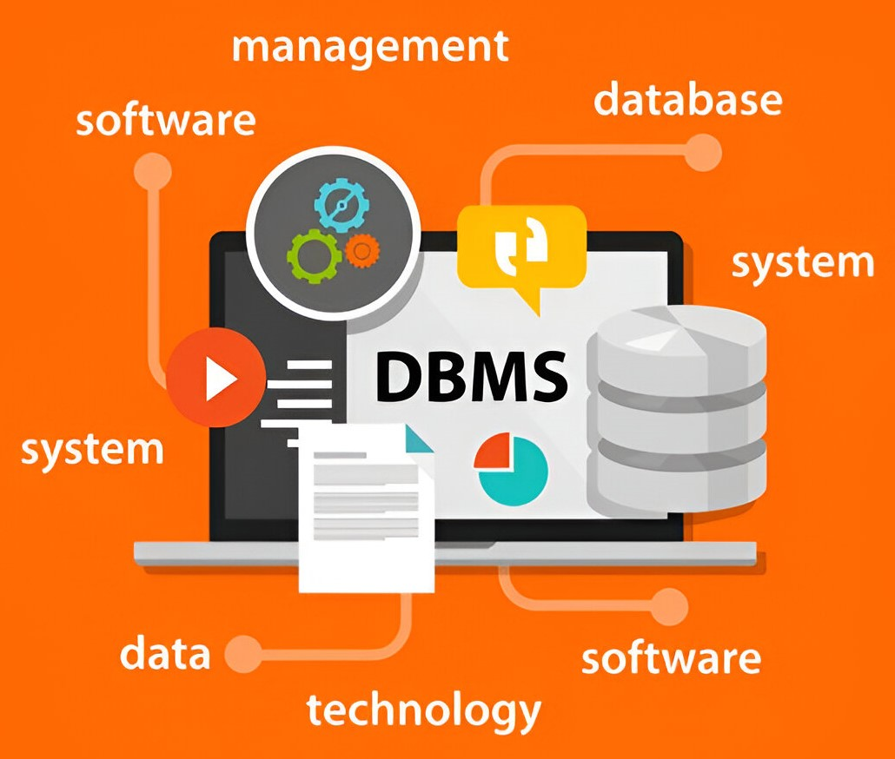
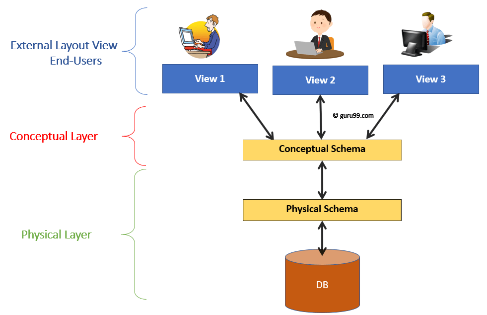

What is DBMS?
The database is a collection of inter-related data which is used to retrieve, insert and delete the data efficiently. It is also used to organize the data in the form of a table, schema, views, and reports, etc.
For Example : The college Database organizes the data about the admin, staff, students and faculty etc.
Database Management System
Database management system is a software which is used to manage the database. For example: MySQL, Oracle, etc are a very popular commercial database which is used in different applications.
DBMS allows users the following tasks:
- Data Definition:
It is used for creation, modification, and removal of definition that defines the organization of data in the database.
- Data Updation:
It is used for the insertion, modification, and deletion of the actual data in the database.
- Data Retrieval:
It is used to retrieve the data from the database which can be used by applications for various purposes.
- User Administration:
It is used for registering and monitoring users, maintain data integrity, enforcing data security, dealing with concurrency control, monitoring performance and recovering information corrupted by unexpected failure.
DBMS Architecture
DBMS architecture refers to the structural design and components that work in harmony to manage and maintain databases effectively.
Advantages of DBMS
- Controls database redundancy:
It can control data redundancy because it stores all the data in one single database file and that recorded data is placed in the database.
- Data sharing:
In DBMS, the authorized users of an organization can share the data among multiple users.
- Easily Maintenance:
It can be easily maintainable due to the centralized nature of the database system.
- Reduce time:
It reduces development time and maintenance need. Backup: It provides backup and recovery subsystems which create automatic backup of data from hardware and software failures and restores the data if required.
- multiple user interface:
It provides different types of user interfaces like graphical user interfaces, application program interfaces.